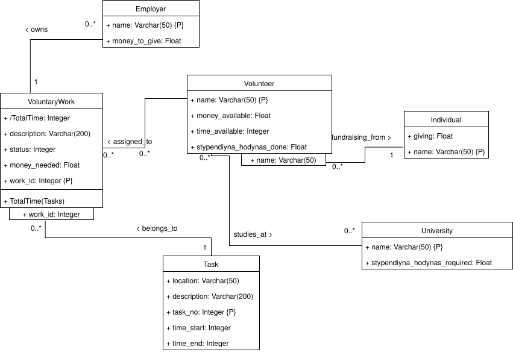
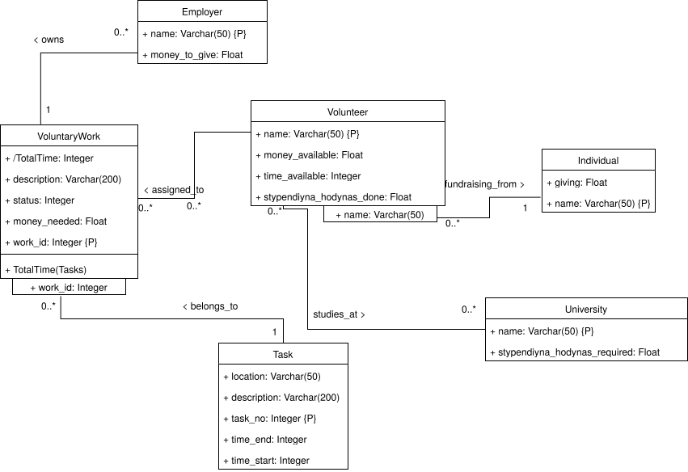
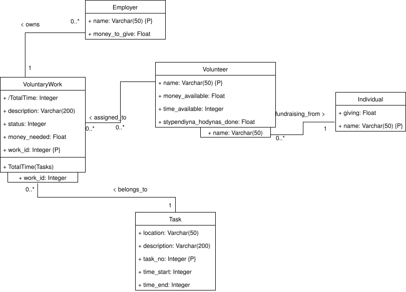
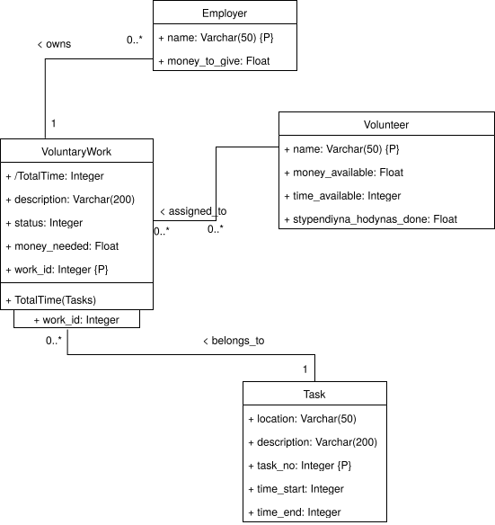
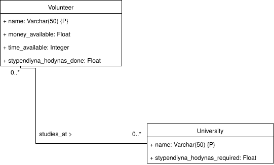
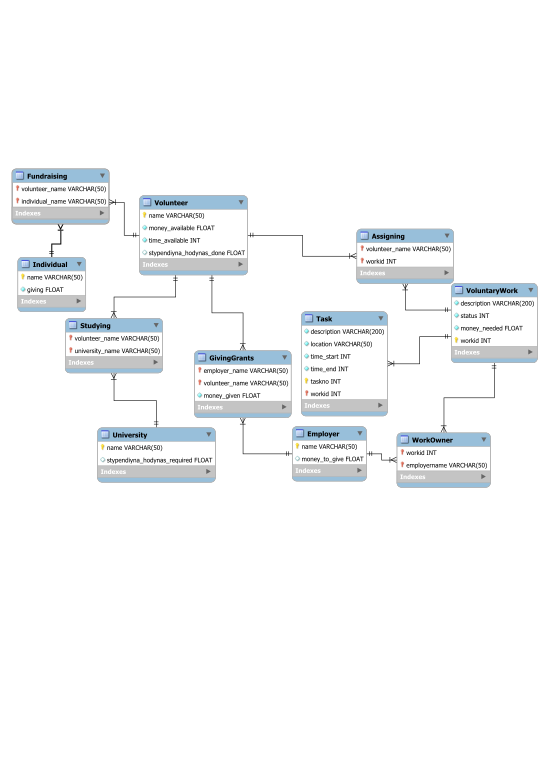
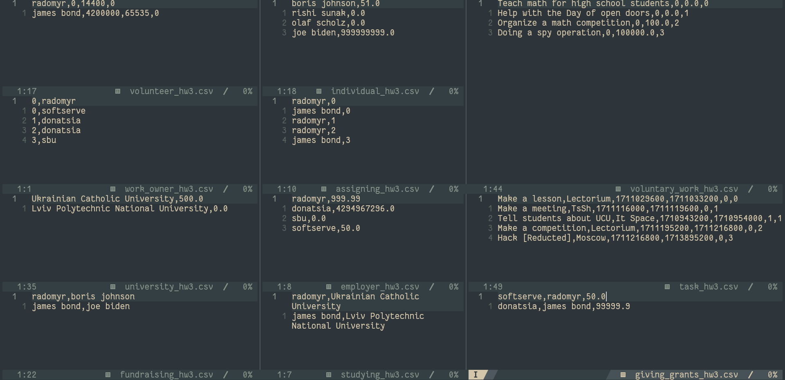

Homework 3 report
0. Introduction
When studying at Ukrainian Catholic University, it is common to apply for a scholarship and have to do some voluntary work fro stypendiyna hodynas. Moreover, the voluntary work is not specific to UCU, and many other people from other universities may need to manage their stypendiyna hodynas. Additionally, many volunteers do volunteer work not for stypendiyna hodynas and don’t study at universities. This document outlines steps to develop a DBS for the domain of voluntary work.
1. Mission & Objectives
The DBS is aimed at managing information about voluntary work of students and other volunteers.
To accompish that the system needs to store information about how much time volunteers can spend, where they take money from and how much their universities require stypendiyna hodynas, if they do voluntary work for theirs sake. Additionally, lots of information about specific tasks is needed to efficiently manage volunteers’ work.
Apart from this, not much information about the volunteers, universities and sources of money is needed.
The basic operations that the system can be used for include:
- adding a volunteer and, if needed, their university,
- managing the information about universities’ requirements for stypendiyna hodynas and presenting it to volunteers that study there,
- managing the information about sources of money for a volunteer. Those can be employers giving grants to do work or individuals, from which a volunteer fundraises,
- managing volunteer’s work:
- money, time (specific to each task of the work) needed,
- time periods, when the work needs to be done,
- locations, where the work needs to be done,
- creating tasks and assigning them to volunteers.
This system would allow for volunteers to manage their money and schedule for volunteering, so that they can make choices on whether to take new voluntary work. It would also allow employers to create tasks and add volunteers to them, possibly with grants assigned.
Having the grasp of the system, we can see stakeholders for the system:
- students, working for stypendiyna hodynas,
- other volunteers, working on their own, needing to manage their time and money,
- universities, wanting to provide an easy way for their students to manage their stypendiyna hodynas,
- employers and individuals, giving money, are very important to the system, as many volunteers depend on them. However, they do not usually interact with the database system directly throught that. However, they can be employers, finding volunteers for voluntary work needed and even giving grants for that. Universities can also be employers in this context, as well as volunteers for themselves.
The tasks and works:
- manage available resources, such as money and time, for volunteers:
- monitor the amount of money available for a volunteer,
- monitor the amount of time available for a volunteer,
- set done and view the required number of stypendiyna hodynas at a university,
- add and view sources of money for a volunteer, such as employers and individuals,
- manage volunteer’s work:
- set and view the amount of money needed for a task,
- the amount of time needed for a task,
- the time periods, when the task needs to be done,
- the tasks that are part of the work, and the locations, where those tasks have to be done,
- manage employers’ work:
- create work,
- assign volunteers to work and possibly give grants for that.
2. Requirements elicitation
As the input I have the mission and objectives of the system, including the stakeholders and tasks. I will now outline the requirements for the system.
Task:
- has a set location and time, where and when it needs to be done,
- a description.
Voluntary work:
- has a description,
- has a status,
- has a set amount of money needed to accomplish it,
- consists of tasks,
- can produce total time spent,
- has volunteers doing the work.
Volunteer:
- has a name,
- has a set amount of money and time available,
- can raise more money through fundraising or get money from employers and their grants,
- can study at a university, which can require a set number of stypendiyna hodynas. Therefore has some number of hodynas already complete,
- can do voluntary work, probably for some employer, and receive stypendiyna hodynas (is stored at voluntary work itself).
Employer:
- has a name,
- can have works, probably assigned to volunteers,
- can have some money available to give as grants to volunteers,
- can give those grants to volunteers.
Individual:
- has a name,
- has some amount of money available to a volunteer.
University:
- has a name,
- has the number of stypendiyna hodynas required for students,
- can also be an employer and have all their received, own and produced data.
Now that I know which information is stored where and is got from where, I can define operations that are needed for the system on this information.
As the stakeholders and actors in my case coincide, I just use the column actor.
The flow diagram is not required to be presented here, so I just made a simple and not very nice one and used it to define the following operations:
| Operation | Actor | Frequency | Performance | Inputs | Outputs |
|---|---|---|---|---|---|
| Create a work | Employer | ~1/day per stakeholder | <1 sec | amount of money needed, description | A new work |
| Add a task to a work | Employer | ~3/day per stakeholder | <1 sec | description, location, time | A new task |
| Assign a volunteer | Employer | ~2/day per stakeholder | <1 sec | volunteer, work | volunteer being assigned to a work |
| Change the task | Employer | ~2/day per stakeholder | <1 sec | task, new description/ location/ time | task being changed |
| Change the work | Employer | ~1/day per stakeholder | <1 sec | work, edited description/ money / volunteers/ status | work being changed |
| Get total time of a work | Volunteer | ~20/day per stakeholder | <1 sec | work | total time needed for the work |
| Add/remove/change individual (its amount of money giving to a volunteer) | Volunteer | ~1/week | <1 sec | individual, new amount of money available | individual being changed/added/removed |
| Change money/time available, stypendiyna hodynas done, university studying in for a volunteer | Volunteer | ~2/day per stakeholder | <1 sec | volunteer, new money/time available, new stypendiyna hodynas done, university | volunteer being changed |
| Change money willing to give | Employer | ~1/month per stakeholder | <1 sec | employer, new money available | employer being changed |
| Change university requirements for stypendiyna hodynas | University | ~1/month per stakeholder | <1 sec | university, new number of stypendiyna hodynas required | university stypendiyna hodynas changed |
Management of users (creation, deletion) is done by the system, and not by the actors themselves per se. However, they need to provide the system with their corresponding data.
Considering the above table, I conclude that the system is not used too often by each individual user, but the biggest resources will be spent on handling getting the information. If the number of users reaches 100 (which is currently considered as the upper limit for the near future), there will still be only about ~2,000 requests a day, which is still insignificant, compared to other potential resources needed, outside of database management.
I will now expand the data to include the data types and the approximate number of instances (for the upper limit, 100 users, ~80 of which are volunteers and ~50 employers - some volunteers can be employers to themselves):
Task:
- has a set location (of type Location) and time (tuples of type Date), where and when it needs to be done,
- a description (of type Varchar(200)),
- ~6 instances per voluntary work,
- included in operations:
- add a task to a work,
- change the task,
- get total time of a work (uses each task’s time to get total per work).
Voluntary work:
- has a description (of type Varchar(200)),
- has a status (number code, of type Integer),
- has a set amount of money needed to accomplish it (of type Decimal),
- consists of tasks,
- can produce time spent (Date),
- has volunteers doing the work,
- ~10 instances per employer, ~500 instances in total. Therefore,
- ~3500 instances of tasks in total,
- included in operations:
- create a work,
- add a task to a work,
- change the work,
- assign a volunteer,
- get total time of a work.
Volunteer:
- has a name (of type Varchar(50)),
- has a set amount of money and time available (of type Decimal and Date),
- can raise more money through fundraising or get money from employers and their grants (of type Decimal),
- can study at a university, which can require a set number of stypendiyna hodynas. Therefore has some number of hodynas already complete (of type Decimal),
- can do voluntary work, probably for some employer, and receive stypendiyna hodynas (is stored at voluntary work itself),
- ~80 instances,
- included in operations:
- change money/time available, stypendiyna hodynas done, university studying in for a volunteer,
- add/remove/change individual (its amount of money giving to a volunteer),
- assign a volunteer.
Employer:
- has a name (of type Varchar(50)),
- can have works, possibly assigned to volunteers,
- can have some money available to give as grants to volunteers (of type Decimal),
- can give those grants to volunteers,
- ~50 instances,
- included in operations:
- create a work,
- add a task to a work,
- assign a volunteer,
- change the task,
- change the work,
- change money willing to give.
Individual:
- has a name (of type Varchar(50)),
- has some amount of money available to a volunteer (of type Decimal),
- ~1 instance per volunteer, so ~80 instances in total,
- included in operations:
- add/remove/change individual (its amount of money giving to a volunteer).
University:
- has a name (of type Varchar(50)),
- has the number of stypendiyna hodynas required for students (of type Decimal),
- can also be an employer and have all their received, own and produced data,
- ~3 instances,
- included in operations:
- change university requirements for stypendiyna hodynas.
The system seems to be enough for the basic management system for the domain of voluntary work. However, it can still be expanded in the future, in particular, the tasks and voluntary work, to allow for more fine-grained control. For example, a better management, then just a set of volunteers responsible for voluntary work may be needed and more information about specific tasks, including the breakdown of volunteers per tasks.
To desctibe this more formally, I will draw a UMLCD for each stakeholder. However, it is more like a part of the part 3, so I will do it there.
3-4. External Views & Refined Conceptual Model
Here is the general UMLCD view:

{width=500px}Here is, what students (volunteers that also study at some university) can see:

{width=500px}of course, students can only see employers, universities, individuals and works they interact with. The same will hold true for all next views too.
Here is, what other volunteers can see:

{width=500px}Here is, what employers can see:

{width=500px}Here is, what universities can see:

{width=500px}Of course, the system can expand in the future to, for example, allow universities to see more information about their students. But for the current system, this is enough.
Some of the notable changes from the previous homework:
- it seems very plausible for someone to give money to a volunteer to accomplish some work (not money for the volunteer to earn, but just to complete the task). Therefore I removed the Organization as an entity and gave every employer the ability to give money,
- as there is no requirement for generalizations and other complications, I simplified the system, so that Individual and Volunteer are separate entities, and not generalized from an employer,
- as each task can have its own time, I moved the time from the work to the task,
- I also added the status to the work, so that it can be easily seen, whether the work is done or not.
5. Refined Logical Model & Database
I’ll do a similar diagram to hw2.
There are a few things different from the previous homework:
Volunteernow hasmoney_availableandstypendiyna_hodynas_donein addition tonameandtime_available,VolunteerandIndividualnow do not have their names as foreign keys fromEmployer,- employers now own some works through
WorkOwnertable, withworkidandemployernamefields (foreign keys fromVoluntaryWorkandEmployerrespectively) - added
statustoVoluntaryWork, Volunteers are now assigned to work throughAssigningtable, withvolunteer_nameandworkidfields (foreign keys fromVolunteerandVoluntaryWorkrespectively),- added
description,time_endandtime_starttoTask, to better manage them, instead of having them global for the wholeVoluntaryWork, andtime_*in a separate table. It will allow for more granular control for users, - there is no
DoingWorkFornow, instead it is split intoAssigningandWorkOwnertables, to allow for more flexibility in the future, - there is no
Organizationnow, as it is not needed for the current system, where anyEmployercan give money to aVolunteer, Fundraisingno longer stores the money raised. Instead, theIndividualitself stores it,Employernow has some money willing to give -money_to_give,- some names were changed to snake_case for readability purposes.

{width=600px}To create the database from nothing, I would need the following script:
CREATE TABLE IF NOT EXISTS University (
name VARCHAR(50) NOT NULL PRIMARY KEY,
stypendiyna_hodynas_required FLOAT -- In hours
);
CREATE TABLE IF NOT EXISTS Employer (
name VARCHAR(50) NOT NULL PRIMARY KEY,
money_to_give FLOAT
);
CREATE TABLE IF NOT EXISTS Volunteer (
name VARCHAR(50) NOT NULL PRIMARY KEY,
money_available FLOAT NOT NULL, -- In $
time_available INT NOT NULL, -- In seconds
stypendiyna_hodynas_done FLOAT -- In hours
);
CREATE TABLE IF NOT EXISTS Individual (
name VARCHAR(50) NOT NULL PRIMARY KEY,
giving FLOAT NOT NULL -- In $
);
CREATE TABLE IF NOT EXISTS Fundraising (
volunteer_name VARCHAR(50) NOT NULL,
individual_name VARCHAR(50) NOT NULL,
PRIMARY KEY (volunteer_name, individual_name),
FOREIGN KEY
(volunteer_name) REFERENCES Volunteer (name),
FOREIGN KEY
(individual_name) REFERENCES Individual (name)
);
CREATE TABLE IF NOT EXISTS VoluntaryWork (
description VARCHAR(200) NOT NULL,
status INT NOT NULL,
money_needed FLOAT NOT NULL, -- In $
workid INT NOT NULL PRIMARY KEY
);
CREATE TABLE IF NOT EXISTS WorkOwner (
workid INT NOT NULL,
employername VARCHAR(50) NOT NULL,
PRIMARY KEY (workid, employername),
FOREIGN KEY
(workid) REFERENCES VoluntaryWork (workid),
FOREIGN KEY
(employername) REFERENCES Employer (name)
);
CREATE TABLE IF NOT EXISTS Task (
description VARCHAR(200) NOT NULL,
location VARCHAR(50) NOT NULL,
time_start Integer NOT NULL, -- In seconds since 1970
time_end Integer NOT NULL, -- In seconds since 1970
taskno INT NOT NULL,
workid INT NOT NULL,
PRIMARY KEY (taskno, workid),
FOREIGN KEY
(workid) REFERENCES VoluntaryWork (workid)
);
CREATE VIEW IF NOT EXISTS WorkTime AS
SELECT
VoluntaryWork.workid,
SUM(Task.time_end - Task.time_start) AS time_to_spend
FROM
VoluntaryWork
LEFT JOIN Task ON VoluntaryWork.workid = Task.workid
GROUP BY
VoluntaryWork.workid;
CREATE TABLE IF NOT EXISTS Studying (
volunteer_name VARCHAR(50) NOT NULL,
university_name VARCHAR(50) NOT NULL,
PRIMARY KEY (volunteer_name, university_name),
FOREIGN KEY
(volunteer_name) REFERENCES Volunteer (name),
FOREIGN KEY
(university_name) REFERENCES University (name)
);
CREATE TABLE IF NOT EXISTS GivingGrants (
employer_name VARCHAR(50) NOT NULL,
volunteer_name VARCHAR(50) NOT NULL,
money_given FLOAT NOT NULL, -- In $
PRIMARY KEY (employer_name, volunteer_name),
FOREIGN KEY
(employer_name) REFERENCES Employer (name),
FOREIGN KEY
(volunteer_name) REFERENCES Volunteer (name)
);
CREATE TABLE IF NOT EXISTS Assigning (
volunteer_name VARCHAR(50) NOT NULL,
workid INT NOT NULL,
PRIMARY KEY (volunteer_name, workid),
FOREIGN KEY
(volunteer_name) REFERENCES Volunteer (name),
FOREIGN KEY
(workid) REFERENCES VoluntaryWork (workid)
);However, the task states that I need to convert the existing database.
Here is the current state of the database, after the homework 2:
MariaDB [voluntary_engagements]> show tables;
+---------------------------------+
| Tables_in_voluntary_engagements |
+---------------------------------+
| DoingWorkFor |
| Employer |
| Fundraising |
| GivingGrants |
| Individual |
| Organization |
| Studying |
| Task |
| TimePeriod |
| University |
| VoluntaryWork |
| Volunteer |
| WorkTime |
+---------------------------------+
13 rows in set (0.001 sec)
MariaDB [voluntary_engagements]> SELECT * FROM DoingWorkFor;
+----------------+--------------+--------+
| volunteername | employername | workid |
+----------------+--------------+--------+
| james bond | sbu | 3 |
| radomyr husiev | donatsia | 0 |
| radomyr husiev | donatsia | 1 |
| radomyr husiev | donatsia | 2 |
+----------------+--------------+--------+
4 rows in set (0.157 sec)
MariaDB [voluntary_engagements]> SELECT * FROM Employer;
+----------------+
| name |
+----------------+
| boris johnson |
| donatsia |
| james bond |
| olaf scholz |
| radomyr husiev |
| rishi sunak |
| sbu |
| softserve |
+----------------+
8 rows in set (0.001 sec)
MariaDB [voluntary_engagements]> SELECT * FROM Fundraising;
+----------------+----------------+-------------+
| volunteername | individualname | moneyraised |
+----------------+----------------+-------------+
| radomyr husiev | boris johnson | 50 |
+----------------+----------------+-------------+
1 row in set (0.000 sec)
MariaDB [voluntary_engagements]> SELECT * FROM GivingGrants;
+------------------+----------------+------------+
| organizationname | volunteername | moneygiven |
+------------------+----------------+------------+
| donatsia | james bond | 99999.9 |
| softserve | radomyr husiev | 50 |
+------------------+----------------+------------+
2 rows in set (0.000 sec)
MariaDB [voluntary_engagements]> SELECT * FROM Individual;
+---------------+----------------+
| willingtogive | name |
+---------------+----------------+
| 51 | boris johnson |
| 50 | radomyr husiev |
| 0 | rishi sunak |
+---------------+----------------+
3 rows in set (0.001 sec)
MariaDB [voluntary_engagements]> SELECT * FROM Organization;
+-----------+
| name |
+-----------+
| donatsia |
| sbu |
| softserve |
+-----------+
3 rows in set (0.001 sec)
MariaDB [voluntary_engagements]> SELECT * FROM Studying;
+----------------+--------------------------------------+
| volunteername | universityname |
+----------------+--------------------------------------+
| james bond | Lviv Polytechnic National University |
| radomyr husiev | Ukrainian Catholic University |
+----------------+--------------------------------------+
2 rows in set (0.001 sec)
MariaDB [voluntary_engagements]> SELECT * FROM Task;
+-----------+--------+--------+
| location | taskno | workid |
+-----------+--------+--------+
| Lectorium | 0 | 0 |
| TsSh | 0 | 1 |
| Lectorium | 0 | 2 |
| Moscow | 0 | 3 |
| Warehouse | 0 | 4 |
| It Space | 1 | 1 |
+-----------+--------+--------+
6 rows in set (0.001 sec)
MariaDB [voluntary_engagements]> SELECT * FROM TimePeriod;
+------------+------------+--------+
| timestart | timeend | workid |
+------------+------------+--------+
| 1710943200 | 1710954000 | 1 |
| 1711029600 | 1711033200 | 0 |
| 1711116000 | 1711119600 | 1 |
| 1711195200 | 1711216800 | 2 |
| 1711216800 | 1713895200 | 3 |
| 1713632400 | 1713646800 | 4 |
+------------+------------+--------+
6 rows in set (0.001 sec)
MariaDB [voluntary_engagements]> SELECT * FROM University;
+--------------------------------------+--------------------------+
| name | stypendiynahodynasneeded |
+--------------------------------------+--------------------------+
| Lviv Polytechnic National University | 0 |
| Ukrainian Catholic University | 500 |
+--------------------------------------+--------------------------+
2 rows in set (0.001 sec)
MariaDB [voluntary_engagements]> SELECT * FROM VoluntaryWork;
+--------+-------------------------------------+-------------+
| workid | workdescription | moneyneeded |
+--------+-------------------------------------+-------------+
| 0 | Teach math for high school students | 0 |
| 1 | Help with the Day of open doors | 0 |
| 2 | Organize a math competition | 100 |
| 3 | Doing a spy operation | 100000 |
| 4 | Sort humanitarian aid | 0 |
+--------+-------------------------------------+-------------+
5 rows in set (0.001 sec)
MariaDB [voluntary_engagements]> SELECT * FROM Volunteer;
+--------------+----------------+
| canspendtime | name |
+--------------+----------------+
| 4200000 | james bond |
| 720000 | radomyr husiev |
+--------------+----------------+
2 rows in set (0.001 sec)
MariaDB [voluntary_engagements]> SELECT * FROM WorkTime;
+--------+-------------+
| workid | timetospend |
+--------+-------------+
| 0 | 3600 |
| 1 | 14400 |
| 2 | 21600 |
| 3 | 2678400 |
| 4 | 14400 |
+--------+-------------+
5 rows in set (0.002 sec)
As the database has changed substantially, I will first remove all the data and just change the schema, as it is only required to change the schema, not the data with it:
MariaDB [voluntary_engagements]> DELETE FROM DoingWorkFor;
Query OK, 4 rows affected (0.086 sec)
MariaDB [voluntary_engagements]> DELETE FROM Fundraising;
Query OK, 1 row affected (0.048 sec)
MariaDB [voluntary_engagements]> DELETE FROM GivingGrants;
Query OK, 2 rows affected (0.107 sec)
MariaDB [voluntary_engagements]> DELETE FROM Individual;
Query OK, 3 rows affected (0.075 sec)
MariaDB [voluntary_engagements]> DELETE FROM Organization;
Query OK, 3 rows affected (0.028 sec)
MariaDB [voluntary_engagements]> DELETE FROM Studying;
Query OK, 2 rows affected (0.110 sec)
MariaDB [voluntary_engagements]> DELETE FROM Task;
Query OK, 6 rows affected (0.085 sec)
MariaDB [voluntary_engagements]> DELETE FROM TimePeriod;
Query OK, 6 rows affected (0.056 sec)
MariaDB [voluntary_engagements]> DELETE FROM University;
Query OK, 2 rows affected (0.062 sec)
MariaDB [voluntary_engagements]> DELETE FROM VoluntaryWork;
Query OK, 5 rows affected (0.042 sec)
MariaDB [voluntary_engagements]> DELETE FROM Volunteer;
Query OK, 2 rows affected (0.116 sec)
MariaDB [voluntary_engagements]> DELETE FROM Employer;
Query OK, 8 rows affected (0.058 sec)
MariaDB [voluntary_engagements]> SELECT * FROM WorkTime;
Empty set (0.001 sec)
MariaDB [voluntary_engagements]> SELECT * FROM Volunteer;
Empty set (0.001 sec)
MariaDB [voluntary_engagements]> SELECT * FROM VoluntaryWork;
Empty set (0.000 sec)
MariaDB [voluntary_engagements]> SELECT * FROM University;
Empty set (0.001 sec)
MariaDB [voluntary_engagements]> SELECT * FROM TimePeriod;
Empty set (0.001 sec)
MariaDB [voluntary_engagements]> SELECT * FROM Task;
Empty set (0.001 sec)
MariaDB [voluntary_engagements]> SELECT * FROM Studying;
Empty set (0.001 sec)
MariaDB [voluntary_engagements]> SELECT * FROM Organization;
Empty set (0.000 sec)
MariaDB [voluntary_engagements]> SELECT * FROM Individual;
Empty set (0.000 sec)
MariaDB [voluntary_engagements]> SELECT * FROM GivingGrants;
Empty set (0.001 sec)
MariaDB [voluntary_engagements]> SELECT * FROM Fundraising;
Empty set (0.001 sec)
MariaDB [voluntary_engagements]> SELECT * FROM Employer;
Empty set (0.000 sec)
Now, I will apply all the changes mentioned earlier:
ALTER TABLE Volunteer
ADD money_available FLOAT;
ALTER TABLE Volunteer
ADD stypendiyna_hodynas_done FLOAT;
ALTER TABLE Volunteer
RENAME COLUMN canspendtime TO time_available;
DROP TABLE IF EXISTS DoingWorkFor;
CREATE TABLE IF NOT EXISTS WorkOwner (
workid INT NOT NULL,
employername VARCHAR(50) NOT NULL,
PRIMARY KEY (workid, employername),
FOREIGN KEY
(workid) REFERENCES VoluntaryWork (workid),
FOREIGN KEY
(employername) REFERENCES Employer (name)
);
ALTER TABLE VoluntaryWork
ADD status INT;
ALTER TABLE VoluntaryWork
RENAME COLUMN workdescription TO description;
ALTER TABLE VoluntaryWork
RENAME COLUMN moneyneeded TO money_needed;
CREATE TABLE IF NOT EXISTS Assigning (
volunteer_name VARCHAR(50) NOT NULL,
workid INT NOT NULL,
PRIMARY KEY (volunteer_name, workid),
FOREIGN KEY
(volunteer_name) REFERENCES Volunteer (name),
FOREIGN KEY
(workid) REFERENCES VoluntaryWork (workid)
);
DROP TABLE IF EXISTS TimePeriod;
ALTER TABLE Task
ADD description VARCHAR(200);
ALTER TABLE Task
ADD time_start INT;
ALTER TABLE Task
ADD time_end INT;
CREATE TABLE IF NOT EXISTS GivingGrants (
employer_name VARCHAR(50) NOT NULL,
volunteer_name VARCHAR(50) NOT NULL,
money_given FLOAT NOT NULL, -- In $
PRIMARY KEY (employer_name, volunteer_name),
FOREIGN KEY
(employer_name) REFERENCES Employer (name),
FOREIGN KEY
(volunteer_name) REFERENCES Volunteer (name)
);
DROP TABLE IF EXISTS Organization;
ALTER TABLE Fundraising
DROP COLUMN moneyraised;
ALTER TABLE Fundraising
RENAME COLUMN volunteername to volunteer_name;
ALTER TABLE Fundraising
RENAME COLUMN individualname to individual_name;
ALTER TABLE Employer
ADD COLUMN money_to_give FLOAT;
ALTER TABLE Individual
RENAME COLUMN willingtogive TO giving;
ALTER TABLE Studying
RENAME COLUMN volunteername TO volunteer_name;
ALTER TABLE Studying
RENAME COLUMN universityname TO university_name;
ALTER TABLE University
RENAME COLUMN stypendiynahodynasneeded TO stypendiyna_hodynas_required;
The database now looks the following way:
MariaDB [voluntary_engagements]> show tables;
+---------------------------------+
| Tables_in_voluntary_engagements |
+---------------------------------+
| Assigning |
| Employer |
| Fundraising |
| GivingGrants |
| Individual |
| Studying |
| Task |
| University |
| VoluntaryWork |
| Volunteer |
| WorkOwner |
| WorkTime |
+---------------------------------+
12 rows in set (0.000 sec)
MariaDB [voluntary_engagements]> describe Assigning;
+----------------+-------------+------+-----+---------+-------+
| Field | Type | Null | Key | Default | Extra |
+----------------+-------------+------+-----+---------+-------+
| volunteer_name | varchar(50) | NO | PRI | NULL | |
| workid | int(11) | NO | PRI | NULL | |
+----------------+-------------+------+-----+---------+-------+
2 rows in set (0.001 sec)
MariaDB [voluntary_engagements]> describe Employer;
+---------------+-------------+------+-----+---------+-------+
| Field | Type | Null | Key | Default | Extra |
+---------------+-------------+------+-----+---------+-------+
| name | varchar(50) | NO | PRI | NULL | |
| money_to_give | float | YES | | NULL | |
+---------------+-------------+------+-----+---------+-------+
2 rows in set (0.001 sec)
MariaDB [voluntary_engagements]> describe Fundraising;
+-----------------+-------------+------+-----+---------+-------+
| Field | Type | Null | Key | Default | Extra |
+-----------------+-------------+------+-----+---------+-------+
| volunteer_name | varchar(50) | NO | PRI | NULL | |
| individual_name | varchar(50) | NO | PRI | NULL | |
+-----------------+-------------+------+-----+---------+-------+
2 rows in set (0.001 sec)
MariaDB [voluntary_engagements]> describe GivingGrants;
+----------------+-------------+------+-----+---------+-------+
| Field | Type | Null | Key | Default | Extra |
+----------------+-------------+------+-----+---------+-------+
| employer_name | varchar(50) | NO | PRI | NULL | |
| volunteer_name | varchar(50) | NO | PRI | NULL | |
| money_given | float | NO | | NULL | |
+----------------+-------------+------+-----+---------+-------+
3 rows in set (0.001 sec)
MariaDB [voluntary_engagements]> describe Individual;
+--------+-------------+------+-----+---------+-------+
| Field | Type | Null | Key | Default | Extra |
+--------+-------------+------+-----+---------+-------+
| name | varchar(50) | NO | PRI | NULL | |
| giving | float | NO | | NULL | |
+--------+-------------+------+-----+---------+-------+
2 rows in set (0.001 sec)
MariaDB [voluntary_engagements]> describe Studying;
+-----------------+-------------+------+-----+---------+-------+
| Field | Type | Null | Key | Default | Extra |
+-----------------+-------------+------+-----+---------+-------+
| volunteer_name | varchar(50) | NO | PRI | NULL | |
| university_name | varchar(50) | NO | PRI | NULL | |
+-----------------+-------------+------+-----+---------+-------+
2 rows in set (0.001 sec)
MariaDB [voluntary_engagements]> describe Task;
+-------------+--------------+------+-----+---------+-------+
| Field | Type | Null | Key | Default | Extra |
+-------------+--------------+------+-----+---------+-------+
| description | varchar(200) | NO | | NULL | |
| location | varchar(50) | NO | | NULL | |
| time_start | int(11) | NO | | NULL | |
| time_end | int(11) | NO | | NULL | |
| taskno | int(11) | NO | PRI | NULL | |
| workid | int(11) | NO | PRI | NULL | |
+-------------+--------------+------+-----+---------+-------+
6 rows in set (0.000 sec)
MariaDB [voluntary_engagements]> describe University;
+------------------------------+-------------+------+-----+---------+-------+
| Field | Type | Null | Key | Default | Extra |
+------------------------------+-------------+------+-----+---------+-------+
| name | varchar(50) | NO | PRI | NULL | |
| stypendiyna_hodynas_required | float | YES | | NULL | |
+------------------------------+-------------+------+-----+---------+-------+
2 rows in set (0.001 sec)
MariaDB [voluntary_engagements]> describe VoluntaryWork;
+--------------+--------------+------+-----+---------+-------+
| Field | Type | Null | Key | Default | Extra |
+--------------+--------------+------+-----+---------+-------+
| description | varchar(200) | NO | | NULL | |
| status | int(11) | NO | | NULL | |
| money_needed | float | NO | | NULL | |
| workid | int(11) | NO | PRI | NULL | |
+--------------+--------------+------+-----+---------+-------+
4 rows in set (0.000 sec)
MariaDB [voluntary_engagements]> describe Volunteer;
+--------------------------+-------------+------+-----+---------+-------+
| Field | Type | Null | Key | Default | Extra |
+--------------------------+-------------+------+-----+---------+-------+
| name | varchar(50) | NO | PRI | NULL | |
| money_available | float | NO | | NULL | |
| time_available | int(11) | NO | | NULL | |
| stypendiyna_hodynas_done | float | YES | | NULL | |
+--------------------------+-------------+------+-----+---------+-------+
4 rows in set (0.001 sec)
MariaDB [voluntary_engagements]> describe WorkOwner;
+--------------+-------------+------+-----+---------+-------+
| Field | Type | Null | Key | Default | Extra |
+--------------+-------------+------+-----+---------+-------+
| workid | int(11) | NO | PRI | NULL | |
| employername | varchar(50) | NO | PRI | NULL | |
+--------------+-------------+------+-----+---------+-------+
2 rows in set (0.001 sec)
MariaDB [voluntary_engagements]> describe WorkTime;
+---------------+---------------+------+-----+---------+-------+
| Field | Type | Null | Key | Default | Extra |
+---------------+---------------+------+-----+---------+-------+
| workid | int(11) | NO | | NULL | |
| time_to_spend | decimal(33,0) | YES | | NULL | |
+---------------+---------------+------+-----+---------+-------+
2 rows in set (0.001 sec)
with WorkTime being a view to calculate the total time needed for a work.
As I will need to repopulate the database anyway, I will do it after normalizing it to the 3NF.
6. Normalization to 3NF
Normalization to 1NF
It seems that my scheme is already in 1NF. Names (name (Individual), name (Volunteer), name (University), name (Employer); volunteer_name, individual_name, university_name, employer_name in Fundraising, Studying, GivingGrants, WorkOwner and Assigning) can’t be split into more atomic ones, as they are considered as one atomic identifier. Even if we wanted to split, it would be really hard to handle first, second, third etc names. Some people have lots of names, and some only one. Similarly for universities, we could split their names into name of city, remove the word “university” from each of their names and just leave the name itself, but many universities do not follow this style. While Lviv Polytechnic National University could be split into Lviv and Polytechnic National, there are many that do not, such as Ukrainian Catholic University, which instead of city has country, or Harvard University, which does not have its own name, but just uses the city’s name. Therefore, universities’ names are also atomic and lose sense, when one tries to decompose their names into different parts.
Another thing, that could have been split, is the time, but it is already split into time_begin and time_end (in Task). Description (description (Task), description (VoluntaryWork)) also can’t be split further, similarly to names.
Numbers are also unsplittable, as they will lose any sense by being separate digits (giving (Individual), time_available (Volunteer), money_available (Volunteer), stypendiyna_hodynas_done (Volunteer), stypendiyna_hodynas_required (University), money_given (GivingGrants), money_to_give (Employer), workid (Task), taskno (Task), workid (WorkOwner), workid (VoluntaryWork), money_needed (VoluntaryWork), status (VoluntaryWork), workid (Assigning)).
Finally, location (Task) is also atomic, because if we split it further, there will be no sense if half-address to find the exact location to go to.
Normalization to 2NF
I will put (P) after the prime attributes. All the others are non-prime.
Fundraising:
volunteer_name (P) and individual_name (P) do not depend on each other, so the table is in 2NF.
Individual:
giving is fully dependent on name (P), so the table is in 2NF.
Volunteer:
money_available, time_available, stypendiyna_hodynas_done are fully dependent on name (P), so the table is in 2NF.
Studying:
volunteer_name (P) and university_name (P) do not depend on each other, so the table is in 2NF.
University:
stypendiyna_hodynas_required is fully dependent on name (P), so the table is in 2NF.
GivingGrants:
employer_name (P) and volunteer_name (P) do not depend on each other, and money_given is fully dependent on them together (not on one of them, as employers can give different amount of money to different volunteers), so the table is in 2NF.
Employer:
money_to_give is fully dependent on name (P), so the table is in 2NF.
Task:
description, location, time_start, time_end depend on taskno (P) and workid (P) together. They are different for different taskno and different for different workid, so there are no partial dependencies here. Therefore, the table is in 2NF.
WorkOwner:
workid (P) and employername (P) do not depend on each other, so the table is in 2NF.
Assigning:
volunteer_name (P) and workid (P) do not depend on each other, so the table is in 2NF.
VoluntaryWork:
description, money_needed, status are fully dependent on workid (P), so the table is in 2NF.
Normalization to 3NF
Prime and non-prime attributes and functional dependencies are already defined in the previous substep.
I will just check for transitive dependencies within tables.
Fundraising:
There are no non-prime attributes, so there are no transitive dependencies.
Individual:
There is only one non-prime attribute and one prime attribute, so there is no possibility for transitive dependencies.
Volunteer:
time_available does not depend on money_available (and vice versa), the same goes for stypendiyna_hodynas_done and money_available (and vice versa), time_available and stypendiyna_hodynas_needed (and vice versa), {money_available, time_available} and stypendiyna_hodynas_needed, {money_available, stypendiyna_hodynas_needed} and time_available, {time_available, stypendiyna_hodynas_needed} and money_available. Therefore there are no transitive dependencies.
Studying:
There are no non-prime attributes, so there are no transitive dependencies.
University:
There is only one non-prime attribute and one prime attribute, so there is no possibility for transitive dependencies.
GivingGrants:
There is only one non-prime attribute and two prime attributes, so there is no possibility for transitive dependencies.
Employer:
There is only one non-prime attribute and one prime attribute, so there is no possibility for transitive dependencies.
Assigning:
There are no non-prime attributes, so there are no transitive dependencies.
WorkOwner:
There are no non-prime attributes, so there are no transitive dependencies.
VoluntaryWork:
status does not define description or money_needed (and vice versa), money_needed does not define description (and vice versa), {description, money_needed} does not define status, {description, status} does not define money_needed, {money_needed, status} does not define description. Therefore there are no transitive dependencies.
Task:
time_end does not define time_start (the only requirement might be that time_end has to be larger than time_start, but this is not part of the database system, and rather a part of business logic), location or description (and vice versa), location does not define time_start or description (and vice versa), description does not define time_start (and vice versa), {time_start, time_end} does not define location,or description, {time_start, location} does not define description or time_end, {time_start, description} does not define location or time_end, {time_end, location} does not define description or time_start, {time_end, description} does not define location or time_start, {location, description} does not define time_start or time_end. Therefore there are no transitive dependencies.
The database is now in 3NF.
Throughout those normalization steps I did not lose any information, as I did not change the database - it was already normalized.
Therefore, the resulting database after this step is the same as the one described previously, so there is no need to show its diagram again.
Populating the database
Now, that the database is normalized, I will populate it with some data.
I will take the data from the previous homework and refine it to be put in the new scheme. Here are the new CSV files I will use (they are heavily based on the CSV file from homework 2):

{width=900px}I will use a similar script to the one from homework 2 to populate the database:
LOAD DATA
INFILE "/drive/Projects/ucu/db/hw3/university_hw3.csv"
INTO TABLE University
FIELDS TERMINATED BY ','
LINES TERMINATED BY '\n';
LOAD DATA
INFILE "/drive/Projects/ucu/db/hw3/employer_hw3.csv"
INTO TABLE Employer
FIELDS TERMINATED BY ','
LINES TERMINATED BY '\n';
LOAD DATA
INFILE "/drive/Projects/ucu/db/hw3/volunteer_hw3.csv"
INTO TABLE Volunteer
FIELDS TERMINATED BY ','
LINES TERMINATED BY '\n';
LOAD DATA
INFILE "/drive/Projects/ucu/db/hw3/individual_hw3.csv"
INTO TABLE Individual
FIELDS TERMINATED BY ','
LINES TERMINATED BY '\n';
LOAD DATA
INFILE "/drive/Projects/ucu/db/hw3/voluntary_work_hw3.csv"
INTO TABLE VoluntaryWork
FIELDS TERMINATED BY ','
LINES TERMINATED BY '\n';
LOAD DATA
INFILE "/drive/Projects/ucu/db/hw3/task_hw3.csv"
INTO TABLE Task
FIELDS TERMINATED BY ','
LINES TERMINATED BY '\n';
LOAD DATA
INFILE "/drive/Projects/ucu/db/hw3/studying_hw3.csv"
INTO TABLE Studying
FIELDS TERMINATED BY ','
LINES TERMINATED BY '\n';
LOAD DATA
INFILE "/drive/Projects/ucu/db/hw3/giving_grants_hw3.csv"
INTO TABLE GivingGrants
FIELDS TERMINATED BY ','
LINES TERMINATED BY '\n';
LOAD DATA
INFILE "/drive/Projects/ucu/db/hw3/fundraising_hw3.csv"
INTO TABLE Fundraising
FIELDS TERMINATED BY ','
LINES TERMINATED BY '\n';
LOAD DATA
INFILE "/drive/Projects/ucu/db/hw3/work_owner_hw3.csv"
INTO TABLE WorkOwner
FIELDS TERMINATED BY ','
LINES TERMINATED BY '\n';
LOAD DATA
INFILE "/drive/Projects/ucu/db/hw3/assigning_hw3.csv"
INTO TABLE Assigning
FIELDS TERMINATED BY ','
LINES TERMINATED BY '\n';Here is the state of the database after populating it:
MariaDB [voluntary_engagements]> show tables;
+---------------------------------+
| Tables_in_voluntary_engagements |
+---------------------------------+
| Assigning |
| Employer |
| Fundraising |
| GivingGrants |
| Individual |
| Studying |
| Task |
| University |
| VoluntaryWork |
| Volunteer |
| WorkOwner |
| WorkTime |
+---------------------------------+
12 rows in set (0.000 sec)
MariaDB [voluntary_engagements]> SELECT * FROM Assigning;
+----------------+--------+
| volunteer_name | workid |
+----------------+--------+
| james bond | 0 |
| james bond | 3 |
| radomyr | 0 |
| radomyr | 1 |
| radomyr | 2 |
+----------------+--------+
5 rows in set (0.001 sec)
MariaDB [voluntary_engagements]> SELECT * FROM Employer;
+-----------+---------------+
| name | money_to_give |
+-----------+---------------+
| donatsia | 4294970000 |
| radomyr | 999.99 |
| sbu | 0 |
| softserve | 50 |
+-----------+---------------+
4 rows in set (0.000 sec)
MariaDB [voluntary_engagements]> SELECT * FROM Fundraising;
+----------------+-----------------+
| volunteer_name | individual_name |
+----------------+-----------------+
| james bond | joe biden |
| radomyr | boris johnson |
+----------------+-----------------+
2 rows in set (0.000 sec)
MariaDB [voluntary_engagements]> SELECT * FROM GivingGrants;
+---------------+----------------+-------------+
| employer_name | volunteer_name | money_given |
+---------------+----------------+-------------+
| donatsia | james bond | 99999.9 |
| softserve | radomyr | 50 |
+---------------+----------------+-------------+
2 rows in set (0.000 sec)
MariaDB [voluntary_engagements]> SELECT * FROM Individual;
+---------------+------------+
| name | giving |
+---------------+------------+
| boris johnson | 51 |
| joe biden | 1000000000 |
| olaf scholz | 0 |
| rishi sunak | 0 |
+---------------+------------+
4 rows in set (0.000 sec)
MariaDB [voluntary_engagements]> SELECT * FROM Studying;
+----------------+--------------------------------------+
| volunteer_name | university_name |
+----------------+--------------------------------------+
| james bond | Lviv Polytechnic National University |
| radomyr | Ukrainian Catholic University |
+----------------+--------------------------------------+
2 rows in set (0.000 sec)
MariaDB [voluntary_engagements]> SELECT * FROM Task;
+-------------------------+-----------+------------+------------+--------+--------+
| description | location | time_start | time_end | taskno | workid |
+-------------------------+-----------+------------+------------+--------+--------+
| Make a lesson | Lectorium | 1711029600 | 1711033200 | 0 | 0 |
| Make a meeting | TsSh | 1711116000 | 1711119600 | 0 | 1 |
| Make a competition | Lectorium | 1711195200 | 1711216800 | 0 | 2 |
| Hack [Reducted] | Moscow | 1711216800 | 1713895200 | 0 | 3 |
| Tell students about UCU | It Space | 1710943200 | 1710954000 | 1 | 1 |
+-------------------------+-----------+------------+------------+--------+--------+
5 rows in set (0.000 sec)
MariaDB [voluntary_engagements]> SELECT * FROM University;
+--------------------------------------+------------------------------+
| name | stypendiyna_hodynas_required |
+--------------------------------------+------------------------------+
| Lviv Polytechnic National University | 0 |
| Ukrainian Catholic University | 500 |
+--------------------------------------+------------------------------+
2 rows in set (0.000 sec)
MariaDB [voluntary_engagements]> SELECT * FROM VoluntaryWork;
+-------------------------------------+--------+--------------+--------+
| description | status | money_needed | workid |
+-------------------------------------+--------+--------------+--------+
| Teach math for high school students | 0 | 0 | 0 |
| Help with the Day of open doors | 0 | 0 | 1 |
| Organize a math competition | 0 | 100 | 2 |
| Doing a spy operation | 0 | 100000 | 3 |
+-------------------------------------+--------+--------------+--------+
4 rows in set (0.000 sec)
MariaDB [voluntary_engagements]> SELECT * FROM Volunteer;
+------------+-----------------+----------------+--------------------------+
| name | money_available | time_available | stypendiyna_hodynas_done |
+------------+-----------------+----------------+--------------------------+
| james bond | 4200000 | 65535 | 0 |
| radomyr | 0 | 14400 | 0 |
+------------+-----------------+----------------+--------------------------+
2 rows in set (0.000 sec)
MariaDB [voluntary_engagements]> SELECT * FROM WorkOwner;
+--------+--------------+
| workid | employername |
+--------+--------------+
| 0 | radomyr |
| 0 | softserve |
| 1 | donatsia |
| 2 | donatsia |
| 3 | sbu |
+--------+--------------+
5 rows in set (0.000 sec)
MariaDB [voluntary_engagements]> SELECT * FROM WorkTime;
+--------+---------------+
| workid | time_to_spend |
+--------+---------------+
| 0 | 3600 |
| 1 | 14400 |
| 2 | 21600 |
| 3 | 2678400 |
+--------+---------------+
4 rows in set (0.002 sec)
The database is now populated with data.
7-9. Develop & Test Software
I developed a simple CLI application that allows to interact with the database in the following ways:
- Getting all the data from a table - for development purposes.
- Operations, specified in part 2:
- Creating a work.
- Adding tasks to a work.
- Assigning a volunteer to a work.
- Changing a task.
- Changing a work.
- Getting total time required for a work.
- Adding/removing/changing individuals.
- Changing money and time available, stypendiyna hodynas done and university studying in for a volunteer.
- Changing money of an employer giving.
- Changing university’s stypendiyna hodynas required.
The code for the application can be found at https://github.com/rhusiev-student/s4_db_hw3
Now, I will run the application and show the test results. Here is an example of it for getting information from tables:
❯ bun run app.ts
Connected to the MySQL database!
? What operation would you like to perform? Get all volunteers
All volunteers:
┌───┬────────────┬─────────────────┬────────────────┬──────────────────────────┐
│ │ name │ money_available │ time_available │ stypendiyna_hodynas_done │
├───┼────────────┼─────────────────┼────────────────┼──────────────────────────┤
│ 0 │ james bond │ 4200000 │ 65535 │ 0 │
│ 1 │ radomyr │ 0 │ 14400 │ 0 │
└───┴────────────┴─────────────────┴────────────────┴──────────────────────────┘
? What operation would you like to perform? Get all individuals
All individuals:
┌───┬───────────────┬────────────┐
│ │ name │ giving │
├───┼───────────────┼────────────┤
│ 0 │ boris johnson │ 51 │
│ 1 │ joe biden │ 1000000000 │
│ 2 │ olaf scholz │ 0 │
│ 3 │ rishi sunak │ 0 │
└───┴───────────────┴────────────┘
? What operation would you like to perform? Get all universities
All universities:
┌───┬──────────────────────────────────────┬──────────────────────────────┐
│ │ name │ stypendiyna_hodynas_required │
├───┼──────────────────────────────────────┼──────────────────────────────┤
│ 0 │ Lviv Polytechnic National University │ 0 │
│ 1 │ Ukrainian Catholic University │ 500 │
└───┴──────────────────────────────────────┴──────────────────────────────┘
? What operation would you like to perform? Get all employers
All employers:
┌───┬───────────┬───────────────┐
│ │ name │ money_to_give │
├───┼───────────┼───────────────┤
│ 0 │ donatsia │ 4294970000 │
│ 1 │ radomyr │ 999.99 │
│ 2 │ sbu │ 0 │
│ 3 │ softserve │ 50 │
└───┴───────────┴───────────────┘
? What operation would you like to perform? Get all voluntary works
All voluntary works:
┌───┬─────────────────────────────────────┬────────┬──────────────┬────────┐
│ │ description │ status │ money_needed │ workid │
├───┼─────────────────────────────────────┼────────┼──────────────┼────────┤
│ 0 │ Teach math for high school students │ 0 │ 0 │ 0 │
│ 1 │ Help with the Day of open doors │ 0 │ 0 │ 1 │
│ 2 │ Organize a math competition │ 0 │ 100 │ 2 │
│ 3 │ Doing a spy operation │ 0 │ 100000 │ 3 │
└───┴─────────────────────────────────────┴────────┴──────────────┴────────┘
? What operation would you like to perform? Get all tasks
All tasks:
┌───┬─────────────────────────┬───────────┬────────────┬────────────┬────────┬────────┐
│ │ description │ location │ time_start │ time_end │ taskno │ workid │
├───┼─────────────────────────┼───────────┼────────────┼────────────┼────────┼────────┤
│ 0 │ Make a lesson │ Lectorium │ 1711029600 │ 1711033200 │ 0 │ 0 │
│ 1 │ Make a meeting │ TsSh │ 1711116000 │ 1711119600 │ 0 │ 1 │
│ 2 │ Make a competition │ Lectorium │ 1711195200 │ 1711216800 │ 0 │ 2 │
│ 3 │ Hack [Reducted] │ Moscow │ 1711216800 │ 1713895200 │ 0 │ 3 │
│ 4 │ Tell students about UCU │ It Space │ 1710943200 │ 1710954000 │ 1 │ 1 │
└───┴─────────────────────────┴───────────┴────────────┴────────────┴────────┴────────┘
? What operation would you like to perform? Get all fundraising relationships
All fundraising relationships:
┌───┬────────────────┬─────────────────┐
│ │ volunteer_name │ individual_name │
├───┼────────────────┼─────────────────┤
│ 0 │ james bond │ joe biden │
│ 1 │ radomyr │ boris johnson │
└───┴────────────────┴─────────────────┘
? What operation would you like to perform? Get all giving grants relationships
All giving grants relationships:
┌───┬───────────────┬────────────────┬─────────────┐
│ │ employer_name │ volunteer_name │ money_given │
├───┼───────────────┼────────────────┼─────────────┤
│ 0 │ donatsia │ james bond │ 99999.9 │
│ 1 │ softserve │ radomyr │ 50 │
└───┴───────────────┴────────────────┴─────────────┘
? What operation would you like to perform? Get all studying relationships
All studying relationships:
┌───┬────────────────┬──────────────────────────────────────┐
│ │ volunteer_name │ university_name │
├───┼────────────────┼──────────────────────────────────────┤
│ 0 │ james bond │ Lviv Polytechnic National University │
│ 1 │ radomyr │ Ukrainian Catholic University │
└───┴────────────────┴──────────────────────────────────────┘
? What operation would you like to perform? Get all work owners
All work owners:
┌───┬────────┬──────────────┐
│ │ workid │ employername │
├───┼────────┼──────────────┤
│ 0 │ 0 │ radomyr │
│ 1 │ 0 │ softserve │
│ 2 │ 1 │ donatsia │
│ 3 │ 2 │ donatsia │
│ 4 │ 3 │ sbu │
└───┴────────┴──────────────┘
? What operation would you like to perform? Get all assignments
All assignments:
┌───┬────────────────┬────────┐
│ │ volunteer_name │ workid │
├───┼────────────────┼────────┤
│ 0 │ james bond │ 0 │
│ 1 │ james bond │ 3 │
│ 2 │ radomyr │ 0 │
│ 3 │ radomyr │ 1 │
│ 4 │ radomyr │ 2 │
└───┴────────────────┴────────┘
Here is the view when starting the application:
❯ bun run app.ts
Connected to the MySQL database!
? What operation would you like to perform?
Exit
Create a work
❯ Add a task to a work
Assign a volunteer
Change a task
Change a work
Get total time of a work
(Move up and down to reveal more choices)
Here are operations done:
Creating a work
? What operation would you like to perform? Create a work
? Enter the work description: Make dekanat site
? Enter the amount of money needed for the work: 0
Work created successfully!
? What operation would you like to perform? Get all voluntary works
All voluntary works:
┌───┬─────────────────────────────────────┬────────┬──────────────┬────────┐
│ │ description │ status │ money_needed │ workid │
├───┼─────────────────────────────────────┼────────┼──────────────┼────────┤
│ 0 │ Teach math for high school students │ 0 │ 0 │ 0 │
│ 1 │ Help with the Day of open doors │ 0 │ 0 │ 1 │
│ 2 │ Organize a math competition │ 0 │ 100 │ 2 │
│ 3 │ Doing a spy operation │ 0 │ 100000 │ 3 │
│ 4 │ Make dekanat site │ 0 │ 0 │ 4 │
└───┴─────────────────────────────────────┴────────┴──────────────┴────────┘
Adding tasks to a work
? What operation would you like to perform? Add a task to a work
? Enter the work ID: 4
? Enter the task description: Make landing page
? Enter the task location: UCU
? Enter the task start time (in seconds since 1970): 1710943200
? Enter the task end time (in seconds since 1970): 1710943400
Task added successfully!
? What operation would you like to perform? Get all tasks
All tasks:
┌───┬─────────────────────────┬───────────┬────────────┬────────────┬────────┬────────┐
│ │ description │ location │ time_start │ time_end │ taskno │ workid │
├───┼─────────────────────────┼───────────┼────────────┼────────────┼────────┼────────┤
│ 0 │ Make a lesson │ Lectorium │ 1711029600 │ 1711033200 │ 0 │ 0 │
│ 1 │ Make a meeting │ TsSh │ 1711116000 │ 1711119600 │ 0 │ 1 │
│ 2 │ Make a competition │ Lectorium │ 1711195200 │ 1711216800 │ 0 │ 2 │
│ 3 │ Hack [Reducted] │ Moscow │ 1711216800 │ 1713895200 │ 0 │ 3 │
│ 4 │ Tell students about UCU │ It Space │ 1710943200 │ 1710954000 │ 1 │ 1 │
│ 5 │ Make landing page │ UCU │ 1710943200 │ 1710943400 │ 1 │ 4 │
└───┴─────────────────────────┴───────────┴────────────┴────────────┴────────┴────────┘
Assigning a volunteer to a work
? What operation would you like to perform? Assign a volunteer
? Enter the volunteer name: radomyr
? Enter the work ID: 4
Volunteer assigned successfully!
? What operation would you like to perform? Get all assignments
All assignments:
┌───┬────────────────┬────────┐
│ │ volunteer_name │ workid │
├───┼────────────────┼────────┤
│ 0 │ james bond │ 0 │
│ 1 │ james bond │ 3 │
│ 2 │ radomyr │ 0 │
│ 3 │ radomyr │ 1 │
│ 4 │ radomyr │ 2 │
│ 5 │ radomyr │ 4 │
└───┴────────────────┴────────┘
Changing a task
? What operation would you like to perform? Change a task
? Enter the task number: 1
? Enter the work ID: 4
? Enter the new task description (or leave blank to keep the current one):
? Enter the new task location (or leave blank to keep the current one): remote
? Enter the new task start time (in seconds since 1970) (or leave blank to keep the current one):
? Enter the new task end time (in seconds since 1970) (or leave blank to keep the current one):
Task updated successfully!
? What operation would you like to perform? Get all tasks
All tasks:
┌───┬─────────────────────────┬───────────┬────────────┬────────────┬────────┬────────┐
│ │ description │ location │ time_start │ time_end │ taskno │ workid │
├───┼─────────────────────────┼───────────┼────────────┼────────────┼────────┼────────┤
│ 0 │ Make a lesson │ Lectorium │ 1711029600 │ 1711033200 │ 0 │ 0 │
│ 1 │ Make a meeting │ TsSh │ 1711116000 │ 1711119600 │ 0 │ 1 │
│ 2 │ Make a competition │ Lectorium │ 1711195200 │ 1711216800 │ 0 │ 2 │
│ 3 │ Hack [Reducted] │ Moscow │ 1711216800 │ 1713895200 │ 0 │ 3 │
│ 4 │ Tell students about UCU │ It Space │ 1710943200 │ 1710954000 │ 1 │ 1 │
│ 5 │ Make landing page │ remote │ 1710943200 │ 1710943400 │ 1 │ 4 │
└───┴─────────────────────────┴───────────┴────────────┴────────────┴────────┴────────┘
Changing a work
? What operation would you like to perform? Change a work
? Enter the work ID: 4
? Enter the new work description (or leave blank to keep the current one):
? Enter the new amount of money needed for the work (or leave blank to keep the current one): 1
? Enter the new work status (or leave blank to keep the current one): 1
Work updated successfully!
? What operation would you like to perform? Get all voluntary works
All voluntary works:
┌───┬─────────────────────────────────────┬────────┬──────────────┬────────┐
│ │ description │ status │ money_needed │ workid │
├───┼─────────────────────────────────────┼────────┼──────────────┼────────┤
│ 0 │ Teach math for high school students │ 0 │ 0 │ 0 │
│ 1 │ Help with the Day of open doors │ 0 │ 0 │ 1 │
│ 2 │ Organize a math competition │ 0 │ 100 │ 2 │
│ 3 │ Doing a spy operation │ 0 │ 100000 │ 3 │
│ 4 │ Make dekanat site │ 1 │ 1 │ 4 │
└───┴─────────────────────────────────────┴────────┴──────────────┴────────┘
Removing an individual
? What operation would you like to perform? Add/remove/change individual
? What operation would you like to perform? Remove individual
? Enter the individual name: olaf scholz
Individual removed successfully!
? What operation would you like to perform? Get all individuals
All individuals:
┌───┬───────────────┬────────────┐
│ │ name │ giving │
├───┼───────────────┼────────────┤
│ 0 │ boris johnson │ 51 │
│ 1 │ joe biden │ 1000000000 │
│ 2 │ rishi sunak │ 0 │
└───┴───────────────┴────────────┘
Adding an individual
? What operation would you like to perform? Add/remove/change individual
? What operation would you like to perform? Add individual
? Enter the individual name: olaf sholz
? Enter the amount of money the individual is giving (or leave blank for removal): 50
? Enter the volunteer name (or leave blank for no volunteer): radomyr
Individual added successfully!
? What operation would you like to perform? Get all individuals
All individuals:
┌───┬───────────────┬────────────┐
│ │ name │ giving │
├───┼───────────────┼────────────┤
│ 0 │ boris johnson │ 51 │
│ 1 │ joe biden │ 1000000000 │
│ 2 │ olaf sholz │ 50 │
│ 3 │ rishi sunak │ 0 │
└───┴───────────────┴────────────┘
? What operation would you like to perform? Get all fundraising relationships
All fundraising relationships:
┌───┬────────────────┬─────────────────┐
│ │ volunteer_name │ individual_name │
├───┼────────────────┼─────────────────┤
│ 0 │ james bond │ joe biden │
│ 1 │ radomyr │ boris johnson │
│ 2 │ radomyr │ olaf sholz │
└───┴────────────────┴─────────────────┘
Getting all tasks belonging to a work
"SELECT * FROM Task WHERE workid = <workid>"
? What operation would you like to perform? Get work tasks
? Enter the work ID: 1
Tasks for the work:
┌───┬─────────────────────────┬──────────┬────────────┬────────────┬────────┬────────┐
│ │ description │ location │ time_start │ time_end │ taskno │ workid │
├───┼─────────────────────────┼──────────┼────────────┼────────────┼────────┼────────┤
│ 0 │ Make a meeting │ TsSh │ 1711116000 │ 1711119600 │ 0 │ 1 │
│ 1 │ Tell students about UCU │ It Space │ 1710943200 │ 1710954000 │ 1 │ 1 │
└───┴─────────────────────────┴──────────┴────────────┴────────────┴────────┴────────┘
Getting total time a volunteer has to spend for all their works
"SELECT SUM(time_end - time_start) as totalTime FROM Task WHERE workid IN (SELECT workid FROM Assigning WHERE volunteer_name = <volunteer_name>)"
? What operation would you like to perform? Get total time of all works a volunteer is assigned to
? Enter the volunteer name: radomyr
Total time of all works the volunteer is assigned to: 39800 seconds
Getting tasks done remotely
"SELECT * FROM Task WHERE location = 'remote'"
? What operation would you like to perform? Get tasks done remotely
Tasks done remotely:
┌───┬───────────────────┬──────────┬────────────┬────────────┬────────┬────────┐
│ │ description │ location │ time_start │ time_end │ taskno │ workid │
├───┼───────────────────┼──────────┼────────────┼────────────┼────────┼────────┤
│ 0 │ Make landing page │ remote │ 1710943200 │ 1710943400 │ 1 │ 4 │
└───┴───────────────────┴──────────┴────────────┴────────────┴────────┴────────┘
Results
As we could see, the application works as expected on the tests for selected operations.
Other operations
There are other operations that were done, but not tested as thoroughly. There is also plenty room for improvments of safety, such as not being able to do all operations for any user, but checking what operations can be done by whom.
For example, a volunteer might be able to change only their own data: money, individuals etc; employers theirs: their voluntary works and tasks; universities only stypendiyna hodynas required; etc.
Additionally, users should not be able to not only change, but also see some data. For example, volunteers might be able to see their voluntary works assigned by employers, but not change. At the same time universities should not be able to see voluntary works at all.
10. Conclusion
The goal of this project was to design and implement a database system for managing voluntary work, catering to the needs of various stakeholders such as volunteers, employers, and universities. The report outlines the process of identifying the mission, objectives, and requirements for the system, followed by the development of a conceptual model, logical model, and physical database design.
The system was designed to facilitate the management of volunteer resources, including time and money, as well as the creation and assignment of tasks and voluntary work. It incorporates entities such as volunteers, employers, universities, individuals, voluntary work, and tasks, along with their respective attributes and relationships.
The report details the normalization process, ensuring that the database adheres to the third normal form (3NF), minimizing data redundancy and maintaining data integrity. The final database schema was presented, and the necessary SQL scripts for creating and populating the database were provided.
A command-line interface (CLI) application was developed to interact with the database, allowing users to perform various operations such as creating voluntary work, adding tasks, assigning volunteers, changing tasks and work details, managing individual donors, and retrieving information about volunteers, employers, universities, and voluntary work.
The application was tested with various scenarios, demonstrating its ability to handle the specified operations successfully. The report includes examples of the application’s output, showcasing the functionality of creating work, adding tasks, assigning volunteers, changing tasks and work details, managing individual donors, and retrieving information from the database.
While the application meets the basic requirements outlined in the report, there is room for improvement in terms of access control and user permissions. Specifically, it is recommended to implement a more robust system where volunteers, employers, universities, and other stakeholders have specific permissions and restrictions on the operations they can perform and the data they can access.
Overall, the system addresses the core requirements and objectives, enabling efficient management of volunteer resources, tasks, and work assignments. With further enhancements in access control and user permissions, the system can provide a more secure and tailored experience for different stakeholders involved in voluntary work initiatives.